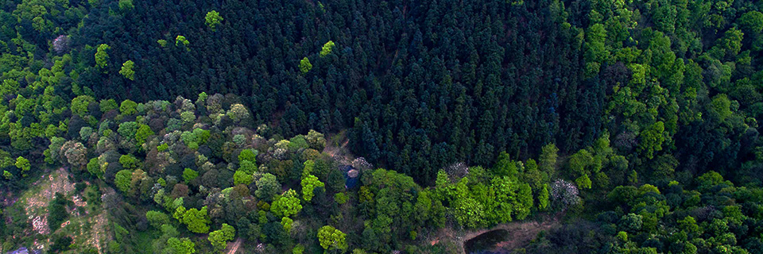
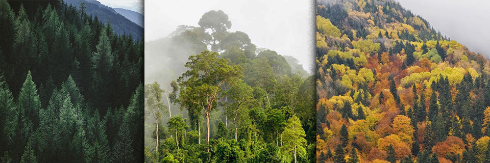
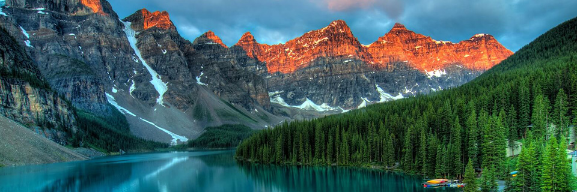

Portfolio
Deforestation Project
Report for ForestQuery into Global Deforestation, 1990 to 2016
 ForestQuery is on a mission to combat deforestation around the world and to raise awareness about this topic and its impact on the environment. The data analysis team at ForestQuery has obtained data from the World Bank that includes forest area and total land area by country and year from 1990 to 2016, as well as a table of countries and the regions to which they belong.
ForestQuery is on a mission to combat deforestation around the world and to raise awareness about this topic and its impact on the environment. The data analysis team at ForestQuery has obtained data from the World Bank that includes forest area and total land area by country and year from 1990 to 2016, as well as a table of countries and the regions to which they belong.
The data analysis team has used SQL to bring these tables together and to query them in an effort to find areas of concern as well as areas that present an opportunity to learn from successes.
View
DROP VIEW IF EXISTS forestation;
CREATE VIEW forestation AS
(SELECT f.country_code, f.country_name, r.region, f.year, f.forest_area_sqkm,
l.total_area_sq_mi*2.59 total_area_sqkm, r.income_group
FROM forest_area f
JOIN land_area l
ON f.country_code = l.country_code
AND f.country_name = l.country_name
AND f.year = l.year
JOIN regions r
ON f.country_code = r.country_code
AND f.country_name = r.country_name)

GLOBAL SITUATION
According to the World Bank, the total forest area of the world was 41 282 695 km2 in 1990. As of 2016, the most recent year for which data was available, that number had fallen to 39 958 246 km2, a loss of 1 324 449 km2, or 3.2%.
The forest area lost over this time period is slightly more than the entire land area of Peru listed for the year 2016 (which is 1 280 000 km2).
Square km of forest by years
SELECT year, ROUND(forest_area_sqkm::numeric,0) sqkm_of_forest
FROM forest_area
WHERE country_name = 'World'
ORDER BY year DESC
Difference in square km between 2016 and 1990
WITH sqkm AS
(SELECT year, ROUND(forest_area_sqkm::numeric,0) sqkm_of_forest
FROM forest_area
WHERE country_name = 'World'
ORDER BY year DESC)
SELECT
(SELECT sqkm_of_forest
FROM sqkm
WHERE year = 1990)
-
(SELECT sqkm_of_forest
FROM sqkm
WHERE year = 2016)
AS difference
FROM sqkm
LIMIT 1
Difference in % between 2016 and 1990
WITH sqkm AS
(SELECT year, ROUND(SUM(forest_area_sqkm)::numeric,0) sqkm_of_forest
FROM forest_area
GROUP BY year
ORDER BY year)
SELECT
((SELECT sqkm_of_forest
FROM sqkm
b>WHERE year = 1990)
-
(SELECT sqkm_of_forest
FROM sqkm
WHERE year = 2016))
/
(SELECT sqkm_of_forest
FROM sqkm
WHERE year = 1990) AS present
FROM sqkm
LIMIT 1
Land area = deforested area
WITH sqkm AS
(SELECT year, ROUND(SUM(forest_area_sqkm)::numeric,0) sqkm_of_forest
FROM forest_area
GROUP BY year
ORDER BY year),
land AS
(SELECT country_name, year, total_area_sq_mi*2.59 total_area_sqkm
FROM land_area
WHERE year = 2016)
SELECT country_name, ROUND(total_area_sqkm::numeric,0)
FROM land
WHERE total_area_sqkm <=
(SELECT
(SELECT sqkm_of_forest
FROM sqkm
WHERE year = 1990)
-
(SELECT sqkm_of_forest
FROM sqkm
WHERE year = 2016)
AS difference
FROM sqkm
LIMIT 1)
ORDER BY total_area_sqkm DESC
LIMIT 1

REGIONAL OUTLOOK
In 2016, the percent of the total land area of the world designated as forest was 39 958 246 km2. The region with the highest relative forestation was Latin America & Caribbean, with 46.2%, and the region with the lowest relative forestation was Middle East & North Africa, with 2.07% forestation.
In 1990, the percent of the total land area of the world designated as forest was 41 282 695 km2. The region with the highest relative forestation was Latin America & Caribbean, with 51%, and the region with the lowest relative forestation was Middle East & North Africa, with 1.8% forestation.
Percent Forest Area by Region, 1990 & 2016:
| Region | 1990 Forest Percentage (%) | 2016 Forest Percentage (%) |
|---|---|---|
| Latin America & Caribbean | 51.03 | 46.16 |
| Europe & Central Asia | 37.3 | 38.06 |
| North America | 35.65 | 36.04 |
| Sub-Saharan Africa | 32.19 | 28.72 |
| East Asia & Pacific | 25.57 | 26.29 |
| South Asia | 16.51 | 17.51 |
| Middle East & North Africa | 1.78 | 2.07 |
The only regions of the world that decreased in percent forest area from 1990 to 2016 were Sub-Saharan Africa (dropped from 32.19% to 28.72%) and Latin America & Caribbean (51.03% to 46.16%). All other regions actually increased in forest area over this time period. However, the drop in forest area in the two aforementioned regions was so large, the percent forest area of the world decreased over this time period from 32.42% to 31.38%.
Countries with the highest/lowest forest areas
WITH sixteen AS
(SELECT r.region region, (SUM(f.forest_area_sqkm)*100)/SUM(l.total_area_sq_mi*2.59) forest
FROM forest_area f
JOIN land_area l
ON f.country_code = l.country_code
AND f.country_name = l.country_name
AND f.year = l.year
JOIN regions r
ON f.country_code = r.country_code
AND f.country_name = r.country_name
WHERE f.year = '2016'
AND f.forest_area_sqkm IS NOT NULL
GROUP BY r.region
ORDER BY 2 DESC),
ninety AS
(SELECT r.region region, (SUM(f.forest_area_sqkm)*100)/SUM(l.total_area_sq_mi*2.59) forest
FROM forest_area f
JOIN land_area l
ON f.country_code = l.country_code
AND f.country_name = l.country_name
AND f.year = l.year
JOIN regions r
ON f.country_code = r.country_code
AND f.country_name = r.country_name
WHERE f.year = '1990'
AND f.forest_area_sqkm IS NOT NULL
GROUP BY r.region
ORDER BY 2 DESC)
SELECT s.region, ROUND(n.forest::numeric, 2) ninety, ROUND(s.forest::numeric, 2) sixteen
FROM sixteen s
JOIN ninety n
ON s.region = n.region

COUNTRY-LEVEL DETAIL
SUCCESS STORIES
There is one particularly bright spot in the data at the country level, China. This country actually increased in forest area from 1990 to 2016 by 527 229 km2. It would be interesting to study what has changed in this country over this time to drive this figure in the data higher. The country with the next largest increase in forest area from 1990 to 2016 was the United States, but it only saw an increase of 79 200 km2, much lower than the figure for China.
China and United States are of course very large countries in total land area, so when we look at the largest percent change in forest area from 1990 to 2016, we aren’t surprised to find a much smaller country listed at the top. Iceland increased in forest area by 213% from 1990 to 2016.
LARGEST CONCERNS
Which countries are seeing deforestation to the largest degree? We can answer this question in two ways. First, we can look at the absolute square kilometer decrease in forest area from 1990 to 2016. The following 3 countries had the largest decrease in forest area over the time period under consideration:
Top 5 Amount Decrease in Forest Area by Country, 1990 & 2016:
| Country | Region | Absolute Forest Area Change |
|---|---|---|
| Brazil | Latin America & Caribbean | 541 510 km2 |
| Indonesia | East Asia & Pacific | 282 193 km2 |
| Myanmar | East Asia & Pacific | 107 234 km2 |
| Nigeria | Sub-Saharan Africa | 106 506 km2 |
| Tanzania | Sub-Saharan Africa | 102 320 km2 |
The second way to consider which countries are of concern is to analyze the data by percent decrease.
Top 5 Percent Decrease in Forest Area by Country, 1990 & 2016:
| Country | Region | % Forest Area Change |
|---|---|---|
| Togo | Sub-Saharan Africa | 75% |
| Nigeria | Sub-Saharan Africa | 61% |
| Uganda | Sub-Saharan Africa | 59% |
| Mauritania | Sub-Saharan Africa | 46% |
| Honduras | Latin America & Caribbean | 45% |
When we consider countries that decreased in forest area percentage the most between 1990 and 2016, we find that four of the top 5 countries on the list are in the region of Sub-Saharan Africa. The countries are Togo, Nigeria, Uganda, and Mauritania. The 5th country on the list is Honduras, which is in the Latin America & Caribbean region.
QUARTILES
Count of Countries Grouped by Forestation Percent Quartiles, 2016:
| Quartile | Number of Countries |
|---|---|
| 4th quartile | 9 |
| 3rd quartile | 38 |
| 2nd quartile | 72 |
| 1st quartile | 85 |
The largest number of countries in 2016 were found in the 1st quartile.
There were 9 countries in the top quartile in 2016. These are countries with a very high percentage of their land area designated as forest. The following is a list of countries and their respective forest land, denoted as a percentage.
Top Quartile Countries, 2016:
| Country | Region | % Designated as Forest |
|---|---|---|
| Suriname | Latin America & Caribbean | 98% |
| Micronesia, Fed. Sts. | East Asia & Pacific | 92% |
| Gabon | Sub-Saharan Africa | 90% |
| Seychelles | Sub-Saharan Africa | 88% |
| Paulu | East Asia & Pacific | 88% |
| American Samoa | East Asia & Pacific | 87% |
| Guyana | Latin America & Caribbean | 83% |
| Lao PDR | East Asia & Pacific | 82% |
| Solomon Islands | East Asia & Pacific | 77% |
QUARTILES
WITH sixteen AS
(SELECT f.country_code code, f.country_name country, f.forest_area_sqkm forest, (l.total_area_sq_mi)*2.59 land
FROM forest_area f
JOIN land_area l
ON f.country_code = l.country_code
AND f.country_name = l.country_name
AND f.year = l.year
WHERE f.year = 2016
AND f.forest_area_sqkm IS NOT NULL
AND f.country_name != 'World'
ORDER BY 2 DESC),
pct AS
(SELECT s.country, r.region, (s.forest/s.land)*100 pct
FROM sixteen s
JOIN regions r
ON s.code = r.country_code
WHERE (s.forest/s.land)*100 IS NOT NULL
ORDER 2 DESC)
SELECT COUNT(country),
CASE
WHEN pct > 75 AND pct <= 100 THEN ('4th quartile')
WHEN pct > 50 AND pct <= 75 THEN ('3rd quartile')
WHEN pct > 25 AND pct <= 50 THEN ('2nd quartile')
WHEN pct > 0 AND pct <= 25 THEN ('1st quartile')
ELSE ('<0') END quartile
FROM pct
WHERE pct IS NOT NULL
AND country != 'World'
GROUP BY 2
ORDER 2 DESC